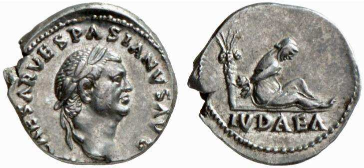
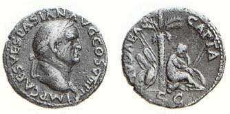

Ce dont je vais parler ici n'est pas nouveau. Je n'ai rien découvert qui ne soit connu des spécialistes. Pourtant, je crois indispensable de revisiter brièvement la question à l'intention des millions d'hommes et de femmes de bonne volonté qui croient sincèrement, sur la base d'une assonance verbale savamment instrumentalisée, que le pays où se sont progressivement regroupés, depuis la fin du XIXe siècle, plus d'un tiers de la population juive mondiale d'aujourd'hui, s'est toujours appelé « Palestine ». De cette conviction non critique, découle fatalement la conviction que les Arabes de multiples nationalités – dont une infime minorité a vécu durant des siècles sur cette terre, avant d'y prospérer par la suite, à la faveur de la lente réhabilitation puis de l'extraordinaire mise en valeur du pays par les pionniers sionistes, et d'adopter le nom de « Palestiniens » – en sont les seuls citoyens légitimes, avec pour conséquence que les Juifs israéliens n'en sont que des occupants. Rappelons que l’appellation de « Palestine » a été forgée, en 131 de notre ère, par les Romains, après l'écrasement de la seconde révolte juive, celle de Bar Kokhba. À l'occasion, ils avaient aussi changé le nom de Jérusalem en celui d’Aelia Capitolina. But recherché: effacer toute référence aux juifs rétifs, dont la résistance farouche avait nécessité la mobilisation de douze légions, soit près de la moitié de l'armée romaine! Une célèbre pièce de monnaie frappée pour l'occasion mentionne « Iudea Capta » (prise de la Judée). Preuve, s'il en fût, que le terme Palestine n'était pas encore né. Plutôt que de disserter à nouveau sur ce sujet complexe et polémique, je me contenterai de renvoyer à deux articles mis en ligne ailleurs 1, et d'ajouter les quelques précisions qui suivent. Quiconque connaît l'Antiquité et a lu les auteurs hellénistiques grecs et les Pères de l'Église des deux premiers siècles de notre ère (même dans des traductions en langues modernes) n'aura pas manqué de remarquer que le nom de « Palestine » n'y désigne jamais le pays des Juifs. Celle-ci est invariablement appelée « Judée », ou « Juda », ou « Terre d’Israël ». Le corpus littéraire le plus fiable et le plus incontestable à cet égard - car rédigé et transmis (au début du IIe siècle de notre ère) par la tradition chrétienne et non par les Juifs – est celui du Nouveau Testament. Il suffit de parcourir les livres qui le composent pour constater la même absence abyssale du terme « Palestine » et la présence importante des termes « Judée » ou « Juda »2. Une énigme demeure toutefois: comment se fait-il que la quasi-totalité des biblistes, théologiens et historiens chrétiens aient repris à leur compte, de manière routinière et acritique, au fil des siècles, la dénomination de « Palestine »? A ma connaissance, le seul universitaire à avoir proposé une piste sérieuse est un chercheur du nom de Nicolas Baguelin. Je ne saurais trop recommander son article, que j'ai repris et mis en ligne en son temps sur l’un de mes sites 3. On constatera les similitudes entre mes arguments et ceux de Baguelin, pourtant j'avais écrit mon texte sans avoir connaissance du sien. Il n'a rien d'érudit ni de pompeux, mais il fait preuve d'une intuition remarquable, que je crois juste, outre qu'il n'hésite pas à mettre en garde les chrétiens contre l'anti-judaïsme sous-jacent à la substitution inappropriée du nom Palestine, aux expressions traditionnelles que la littérature chrétienne elle-même utilise à bon escient, à savoir: « Judée », « Juda » et « terre d'Israël ». Pour ma part, j'ai procédé à quelques sondages dans des œuvres patristiques qui figurent dans ma bibliothèque personnelle, et voici ce que j'ai trouvé.
Irénée de Lyon (évêque du IIe s.), non seulement ne mentionne jamais le terme « Palestine », mais au chapitre 24 de son ouvrage intitulé « Démonstration de la prédication apostolique », rédigé vers la fin du IIe siècle de notre ère, on peut lire cette phrase instructive:
Quand [Abraham] arriva sur la terre qui est maintenant appelée Judée, [Dieu] lui apparut dans une vision et lui dit: Je te donnerai cette terre, ainsi qu'à ta descendance après toi, en possession éternelle 4.
Un autre Père de l'Église de la même époque, Théophile d'Antioche (IIe s.), écrit ce qui suit:
[Dieu] accomplit des prodiges aussi effrayants qu'extraordinaires par l'intermédiaire de Moïse [...] il les délivra [...] les établit à nouveau dans la terre de Canaan, nommée depuis Judée… 5
On lit, dans un très ancien commentaire de l'Apocalypse écrit par un autre écrivain ecclésiastique, du nom de Victorin de Pettau (ou de Poetovio), qui vécut au IIIe siècle les lignes suivantes qui nécessiteraient une explicitation approfondie:
« La femme s'envola au désert à l'aide des ailes du grand aigle » [Ap 12, 4], c'est-à- dire grâce aux deux prophètes. C'est toute l'Église catholique, avec en elle les cent quarante-quatre mille [Juifs] qui, aux temps derniers, viendront à la foi lors de la venue d'Élie. Au reste, qu'il doive se trouver là le reste du peuple double, dans l'attente de la venue de notre Seigneur Jésus-Christ, le Seigneur Christ l'a dit lui aussi dans l’Évangile: « Qu'alors ceux qui sont en Judée fuient dans les montagnes », c'est- à-dire, que tous ceux qui auront été rassemblés en Judée s'en aillent en ce « lieu qui leur est préparé pour qu'ils y soient nourris trois ans et six mois loin de la face du diable. » « Les ailes du grand aigle » sont les deux prophètes, Élie et l'autre prophète qui sera avec lui.
Pour finir, je ne saurais trop recommander la lecture du chapitre rédigé par l’abbé Michel Remaud, pour le livre collectif, récemment publié 6, intitulé « La Vocation de la Terre sainte ». En effet, M. Remaud y fait la précieuse remarque suivante: « […] L’Évangile contient dès ses premières pages une double mention de la "terre d’Israël" (gè Israèl), qui est peut-être la plus ancienne occurrence de cette expression en dehors de l’Ancien Testament. L’Évangile de Matthieu rapporte en effet que "l’ange du Seigneur", après la mort d’Hérode, apparut en songe à Joseph, exilé en Égypte, pour lui enjoindre de prendre "l’enfant et sa mère" et de se rendre en "Terre d’Israël". Sur quoi Joseph, poursuit le texte, "prit l’enfant et sa mère et se rendit en Terre d’Israël" (Mt 2, 19-21). »7


Première mise en ligne sur le site The Times of Israel, le 3 juillet 2015 Mise à jour le 22 octobre 2016 sur le site Academia.edu
1« Les Palestiniens - D'où viennent-ils? Que veulent-ils? », Par l'Abbé Alain René Arbez; « Le grand bluff du nom "Palestine": Petit rappel pour les "ignorants de bonne foi"». ↩
2 Judée, 46 fois: Mt 2, 1. 5. 22; 3, 1. 5; 4, 25; 19, 1; 24, 16; Mc 1, 5; 3, 7; 10, 1; 13, 14; Lc 1, 5. 65; 2, 4; 3, 1; 4, 44; 5, 17; 6, 17; 7, 17; 21, 21; 23, 5; Jn 3, 22; 4, 3. 47. 54; 7, 1. 3; 11, 7; Ac 1, 8; 2, 9. 14; 8, 1; 9, 31; 10, 37; 11, 1. 29; 12, 19; 15, 1; 21, 10; 26, 20; 28, 21; Rm 15, 31; 2 Co. 1, 16; Ga 1, 22; 1 Th 2, 14. Juda, 6 fois: Mt 2, 6; Lc 1, 39; He 7, 14; 8, 8; Ap 5, 5; 7, 5. ↩
3 « La Palestine, pays de Jésus? ». ↩
4 Autres mentions du terme « Judée » dans cette oeuvre d'Irénée, aux chapitres 40, 58, 63, 64, 65, 77, 86. ↩
5 Trois livres à Autolycus, Livre III, Sources chrétiennes, Cerf, Paris, 1948, p. 140. ↩
6 David Meyer, Michel Remaud, Tareq Oubrou, La Vocation de la Terre sainte. Un juif, un chrétien, un musulman s’interrogent, Lessius, Éditions jésuites, Namur-Paris, 2014. ↩
7 Dans son chapitre intitulé « Perspectives chrétiennes », p. 157-204. Le passage cité ici figure en p. ↩
162 de l’ouvrage collectif cité. ↩